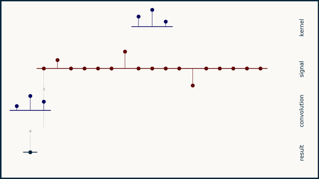

part of The e2eML Course Catalog
Welcome! Pour yourself a mug of something hot and have a look around.
Neural network projects
- 322. Two dimensional convolutional neural networks
- 321. One dimensional convolutional neural networks
- 314. Neural network optimization
- 313. Advanced neural network methods
- 312. Build a neural network framework
- 311. Neural network visualization
Machine learning case studies
Tutorials
Tools
Career development
322. Two Dimensional Convolutional Neural Networks
- Coming August 1, 2020
321. One Dimensional Convolutional Neural Networks

- Build a classification model for detecting unhealthy rhythms in electrocardiography data.
- How one dimensional convolution works
- Coming June 1, 2020
314. Neural Network Optimization

- Build an autoencoder to extract basis elements of images of the Martian surface.
- Optimize compression performance by tuning hyperparameters.
- Build and use Evolutionary Powell's method, an experimental hyperparameter optimization algorithm.
313. Advanced Neural Network Methods

- Add regularization, dropout, computation graphs and optimizer options to the framework we built in Course 312.
- Run it on images from Mars.
- How Regularization Works
312. Build a Neural Network Framework

- Code up a fully connected deep neural network from scratch in Python.
- Extend it into a framework through object-oriented design.
311. Neural Network Visualization

- Create a custom neural network visualization in python.
- Learn Matplotlib tricks for making professional plots.
213. Polynomial Regression

- Code up a robust optimizer from scratch in python.
- Fit high-order polynomials to real data on dog breeds.
- Implement Monte Carlo cross-validation to select the best model.
212. Time-series Prediction

- Build a command line weather prediction tool from a century of data.
- Perform data-driven deseasonalization to remove annual weather patterns.
- Use autocorrelation to extract predicted temperatures.
211. Decision Trees

- Code up a decision tree in python from scratch.
- Dynamically construct URL queries for live transit data API.
- Build the model into a command line application.
193. How Neural Networks Work

- How fully connected neural networks work
- How convolutional neural networks work
- How recurrent neural networks and LSTM work
- How backpropagation works
- What neural networks can learn
- and more at Course 193
191. How Selected Models and Methods Work

- How decision trees work
- How Bayesian inference works
- How convolution works
- How autocorrelation works
- How support vector machines work
173. How Optimization for Machine Learning Works

- Optimization methods
- Optimizing a central tendency model
- Optimizing a linear model
- Optimizing complex models
171. How to Choose a Model

- Choosing between models
- Separating signal from noise
- Choosing a loss function
- Splitting the data
- Navigating assumptions
137. Signal Processing Techniques

- How to normalize a signal by mean and variance
- Rate of change
- How to turn a picture into numbers
- How to convert RGB color images to grayscale
- How one dimensional convolution works
- and more at Course 137
133. How to Navigate Matplotlib

- Lines and curves
- Scatterplots and points
- Text, axis labels, and annotation
- Patches
- Ticks, tick labels, and grids
- Layout, background, and multiple plots
- and more at Course 133
131. Data Munging Tips and Tricks
- How to slice and index pandas DataFrames
- Reading and writing data files
- Make your code run faster
- How to use datetime
- and more at Course 131
121. Navigating a data science career
- Data science archetypes
- How to navigate a data science interview
- How to get hired as a data scientist
- Up-level your resume
- How to choose a project
- Imposter syndrome
- and more at Course 121
101. Data science concepts
- How data science works
- Data science for beginners
- There is more to data science than machine learning
- What is data
- How to get good quality data
- What questions can machine learning answer
Foundational Skills
- 091. Mental Focus
- 071. Git
- 041. Statistics
- 032. Linear Algebra
- 031. Calculus
- 021. SQL
- 016. C++
- 012. NumPy
- 011. Python
Here are some recommended course sequences to get you started.